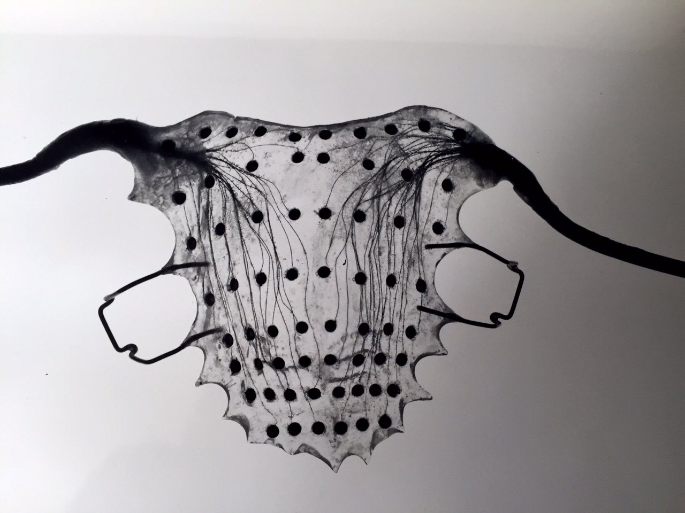
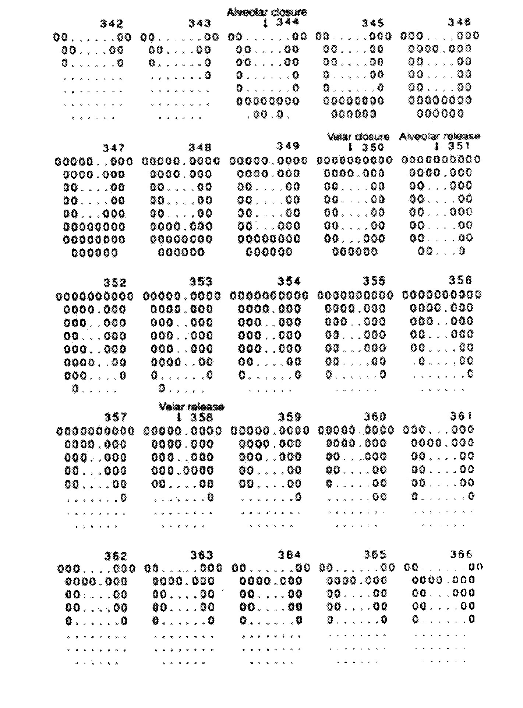
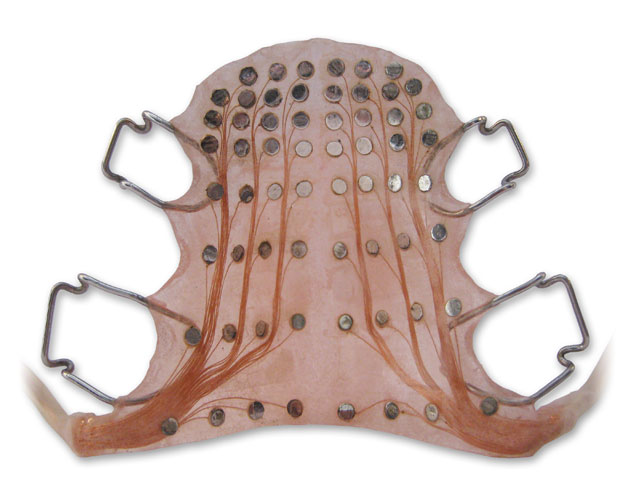
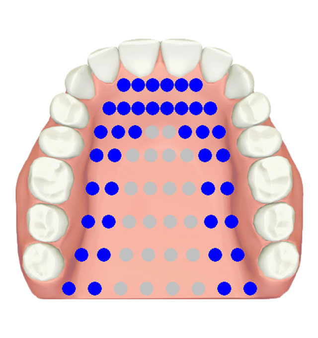

Reading Electropalatography System
A computer worn inside the mouth—62 gold electrodes on a custom acrylic palate turned invisible tongue movements into a real-time visual targeting game.

Overview
The Reading Electropalatography (EPG) System is a pioneering human-computer interface that captures tongue-to-palate contact in real time and displays it as visual biofeedback for articulation training and speech therapy. Developed at the University of Reading (UK) between 1974 and 1978 and refined through the 1980s, the system consists of a custom-molded acrylic artificial palate embedded with 62 gold electrodes, connected via a multiplexer to a computer that renders illuminated contact patterns on a CRT display. The user — often a patient with a speech disorder — wears the palate like a dental retainer and watches the screen as dots illuminate wherever their tongue touches. A target pattern is overlaid, transforming the invisible interior of the mouth into a visible, game-like spatial targeting task.
A small AC signal (<50 µA) passes through the user's body via a reference electrode worn on the neck or wrist. When the tongue touches a palatal electrode, it completes a low-impedance circuit. The 62 electrodes are scanned sequentially at 10 kHz each, yielding binary on/off contact data at 100–200 frames per second. The original system was built around a DEC PDP-8 minicomputer with software written by Peter Roach in machine code; later versions ran on Commodore and IBM-compatible PCs.
The system became the dominant EPG platform in Europe, established clinical protocols still used today, and spawned a commercial lineage through Articulate Instruments' EPG3 and WinEPG (discontinued 2013) and icSpeech's LinguaGraph. It was used for cleft palate therapy, hearing-impaired speech training, dysarthria rehabilitation, second-language pronunciation, and fundamental phonetic research. The LinguaGraph system was even used aboard the International Space Station in 2025 (Axiom Mission 4's Voice in Space programme).
Deep dive
Before electropalatography, phoneticians studied tongue-palate contact by painting a speaker's tongue with charcoal, having them produce a sound, and photographing the resulting marks on the palate. This static palatography could only capture a single moment. W.J. (Bill) Hardcastle (1943–2015), a phonetician at the University of Reading's Department of Linguistic Science, needed to capture the real-time dynamics of tongue-palate contact — the fleeting closures, releases, and constrictions that distinguish one speech sound from another. Working with electronics engineer Wilf Jones and programmer/linguist Peter Roach, he developed the Reading EPG system. The first paper describing the computer-based system was published by Roach and Hardcastle in 1976 ('A computer system for the processing of electropalatographic and other data,' Proceedings of the Vth Phonetics Symposium, University of Essex). The system was fully operational and photographed by July 1978. Hardcastle went on to become Professor of Speech Science and founding Director of the Speech Science Research Centre at Queen Margaret University, Edinburgh.
The Reading EPG palate is a horseshoe-shaped custom-molded acrylic baseplate (~1–1.5 mm thick) fabricated from a dental alginate impression of the user's upper palate and teeth. It clips to the upper teeth like an orthodontic retainer. The palate carries 62 gold-plated electrodes arranged in an 8-row grid approximating the anatomy of the human hard palate: Row 1 (alveolar ridge) has 6 electrodes, rows 2–7 have 8 each, and row 8 (velar region) has 8 arranged with the posterolateral corners omitted to fit the dental arch. Electrode diameter is approximately 1.5 mm with center-to-center spacing of 4.5–5 mm. The signal chain begins with a small AC signal (<50 µA) passed through the user's body via a neck/wrist reference electrode. When the tongue touches a palatal electrode, it completes a low-impedance circuit. A 64-channel FET multiplexer scans all 62 electrodes at 10 kHz per electrode, with a full-palate scan taking approximately 6 ms, providing an effective frame rate of 100–200 Hz. Contact data passes via a parallel interface to the host computer. The original system used a DEC PDP-8 minicomputer running RT-11; by the early 1980s it was reprogrammed for Commodore and later IBM-compatible PCs.
A therapy session with the Reading EPG followed a tight biofeedback loop. The user inserted the custom palate. The CRT displayed a static 8-row palate schematic — as if looking up into the mouth from below. The speech therapist selected a target contact pattern (e.g., complete front-row closure for /t/, a central groove with lateral contact for /s/, or full rear-row closure for /k/) displayed as an overlaid template. The user attempted the target sound. In real time — within approximately 10 ms — any tongue-palate contact illuminated the corresponding dot on the screen. The user saw their actual contact pattern superimposed on the target template and made micro-adjustments to tongue posture, place, or groove shape. The display updated continuously at up to 100 frames/second. Early CRTs had phosphor persistence, giving contacts a brief 'trail' that helped users perceive dynamic gestures such as closures and releases. The therapist cuing articulatory goals ('raise the sides,' 'make a groove in the middle') while watching both user and screen. All frames were logged to disk for offline analysis.
The Reading EPG system was used with several populations: children and adults with cleft palate (identifying compensatory articulations invisible to auditory assessment), hearing-impaired individuals (using the visual channel to learn correct articulation when auditory feedback was absent or degraded), people with dysarthria and apraxia from stroke or cerebral palsy, children with persistent speech sound disorders unresponsive to conventional therapy, and second-language learners. Fiona Gibbon, a key clinical researcher, established EPG as an assessment and therapy tool, identifying 'undifferentiated lingual gestures' — tongue movements that sound correct to the ear but are biomechanically abnormal. The system was commercialized by Articulate Instruments Ltd. (founded by engineer Alan Wrench), which released the portable EPG3 around 1990 and WinEPG in 2000. Although Articulate Instruments ceased EPG production in 2013, the technology lineage continues through icSpeech's LinguaGraph (Rose Medical Solutions Ltd., Canterbury), which uses the identical Reading 62-electrode palate design and sells to over 30 countries including Great Ormond Street Hospital and Oxford University Hospitals.
Team & pioneers
- W.J. (Bill) Hardcastle (1943–2015). Principal investigator; Professor of Speech Science at University of Reading. Intellectual architect of the Reading EPG. Later founding Director of Speech Science Research Centre at Queen Margaret University, Edinburgh.
- Peter Roach. Hardware/software designer; programmed the PDP-8 interface in machine code. Later Professor of Phonetics at Reading and Leeds. Uploaded the 1978 palate photographs to Wikimedia Commons.
- Wilf Jones. Electronics engineer; designed the original EPG hardware, multiplexer, and interface card.
- Fiona Gibbon. Clinical researcher; established EPG as a clinical tool for children with speech disorders, cleft palate, and hearing impairment. Identified 'undifferentiated lingual gestures.'
- Alan Wrench. Engineer; designed EPG3 hardware and WinEPG software. Founded Articulate Instruments Ltd. to commercialize the Reading EPG technology.
- Katerina Nicolaidis. Phonetic researcher; cross-linguistic EPG studies providing crucial normative data on Greek and English coarticulation.
Media



Sources
- Hardcastle, W.J. (1972). 'The use of electropalatography in phonetic research.' Phonetica, 25(4), 197–215.
- Hardcastle, W.J., Jones, W., Knight, C., Trudgeon, A., and Calder, G. (1989). 'New developments in electropalatography: A state-of-the-art report.' Clinical Linguistics & Phonetics, 3(1), 1–38.
- Wikipedia: Electropalatography
- Articulate Instruments: A History of EPG
- icSpeech: LinguaGraph Electropalatography System (current commercial descendant)
- icSpeech: Tongue Palate Contact animations (EPG displays for each consonant)